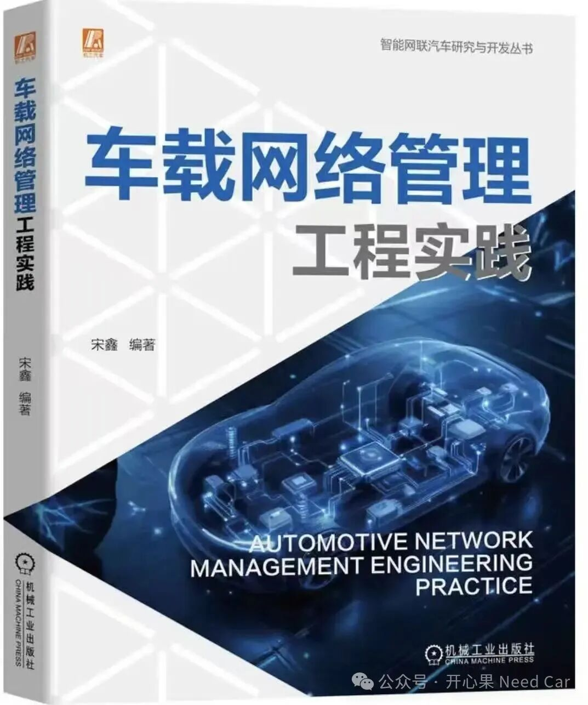

开心果 Need Car · 2026-10-20T06:20:00+08:00 · 微信原文
有人说“读纸质书，送手写祝福”，可以给这世界一点深情，不再寡淡。你好，“见面了”

1.为什么要写这本书？
促成的因素并不是单一的。最开始，有出版社的朋友通过微信联系我，希望能将我微信公众号的文章整理一下，基于工程的视角写一本书。老实说，平日里的工作和生活的柴米油盐已经挤满了我的时间表。自认为很难“挤”出一丁点的时间去写一本书。因为我知道，基于工程的视角写一本书，需要庞大的知识储备，而我对自己的储备并没有信心。那么，又是什么给了我动力去撰写这本书呢？
家人的肯定。我爱人说：“你写了那么多公众号文章，写书这事你真的可以认真考虑一下。”确实，我一直有整理工作内容的习惯，利用碎片化时间整理自己的所思和所想，然后通过“开心果 Need Car”这个公众号分享出来，也通过它收获读者的反馈和斧正。既然文字可以帮助他人，也能提升自己，为什么不写一本书呢？
除了爱人，我想，我儿子是我坚持写完本书的最大动力。小家伙问我：“爸爸，你写的书会有很多人看吗？”我没有正面回答，但是很开心。此时，我更加清晰地知道自己为什么要写了——为他树立榜样。我想以身作则地教会他坚持，让他觉得爸爸“很厉害”。或许，这比任何的说教都来得实际，因为这种“成长”是潜移默化的影响。写书的日子里，有时确实很累，有时也不知道写得是否合理，也有时想放弃…但是，每每想到为儿子树立榜样这件事，放弃的念头就瞬间打消。
朋友的鼓励。有些朋友知道我要写书，给予我很多鼓励，让我更深信撰写本书的意义。写书不是为了炫耀自己的才能，而是能通过本书的分享去收获更多。就像我写公众号，有时写的论点或者对问题的理解并不准确，有些相关领域的读者，看到后给我留言或者私信，通过交流，不仅加深了我对问题的理解，也让我意识到自己的“浅薄”。所以，写书的事也就势在必行了。
读者的期待。微信公众号“开心果Need Car”从2021 年开始写，一直坚持到现在。随着写的量和内容质量的提高，被抄袭的也越来越多。甚至一些读者看不惯，还会转我一些被抄袭内容，替我愤愤不平。最开始，自己也试着去举报一些过分的抄袭者，但是，这太耗费自己的时间和精力。怎么办？转念一想，如果我分享的内容可以真正地帮到那些需要的朋友，那就这样吧。有不少读者给我留言，语言很温暖，也很有力量，我在此向他们
表达谢意。我记得有位读者说过，我的文字像坐在身边的同事。如果本书也能达到同样的效果，写书的意义也就从另一个层面具象化了。所以，上述多种因素的叠加，为我撰写本书加注了动力。
2.如何阅读本书
关于如何阅读这本书，我从个人的工程实践经历，浅谈自己的看法。如果你是一家企业的工程师，当出现工程问题时，或许，在不少的时间里，会觉得自己对问题无从下手。当然，这也是我开始从业时的感受。为什么会有这样的感受？原因是对知识框架的掌握不够充分和细致。为什么这样说？目前来说，汽车控制器的开发周期短，而且一个工程需要众多开发工程师的协作配合，每个工程师分担的工作内容很聚焦，在考虑问题时，就难免有一定的局限性。同时，工具链在很大程度上“屏蔽”了工程师对细节的了解。所以，当出现跨模块的复杂、偶发问题时，初入行的工程师，会感觉无从查起。基于此，本书在前两个章节着重讨论通信物理层的知识。物理层的知识就像房子的地基，构建好了基础，才能更好地设计上层建筑。本书从第3 章 ~ 第9 章讨论上层协议。如果我们有了很好的物理层基础，构建上层协议将不再困顿，甚至能更好地理解协议设计的目的。如此，上层和下层知识贯穿，我们开发的工业产品才能达到预期的设计目标，甚至超出预期。本书的最后一个章节虽然只对CAN/CAN FD 讨论了关注的测试项，但是，基于这样的思路，也可以延伸到其他总线。
当然，本书还有很多想写却未展开的内容，比如：CAN XL、Ethernet、硬件路由等。如果本书有机会再版，我将试着补充进去。
3.勘误和支持
限于自己水平的局限性，书中所述内容难免出错或者表达不精准，恳请读者包容和指正。如果你想纠正书中表达不准确之处，烦请通过微信公众号“开心果 Need Car”留言。期待你的留言，在技术的路上我们共勉。对于本书的内容，很多是结合工程问题，反向“咀嚼”对应规范和资料的产物，它并不是创新，而更像是一位技术工程师的学习过程。所以，读者朋友们可以将本书看作一本“工具书”，更精准地描述，还是需要回归到原有的技术规范、客户需求或者器件的手册说明。
我想表达的感谢已经在前面为什么要写这本书里提及。这里，向我的家人、朋友、读者，还有自己，道一声：谢谢。